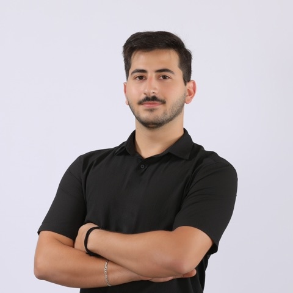

Junior Software Engineer
TECFRAC
TECFRAC is the technology arm behind Whish Money, Lebanon's leading digital wallet (Central Bank of Lebanon regulated, 1M+ users). Building and maintaining features inside its Java/Spring platform.
Software Engineer · Beirut, Lebanon
I build backend systems in Java/Spring at TECFRAC, and reach for .NET when a project calls for it. Below: where I've worked and a few things I've built.

I'm a backend developer in Beirut.
Most days that means Java/Spring at TECFRAC; before that, I built a .NET API with JWT auth at Monty Mobile.
The projects below are things I built for fun along the way: small, pointless, or genuinely useful. Most exist because I wanted to know how something worked, not because anyone asked.
I use AI every day as part of how I build, this site included. Vibe-coding is fine by me, as long as I understand every line of code in front of me.
The strongest position right now isn’t “AI vs. developer.” It’s a developer who knows how to work with AI well.
Backend roles in Beirut, on Java/Spring today and .NET before that.
TECFRAC
TECFRAC is the technology arm behind Whish Money, Lebanon's leading digital wallet (Central Bank of Lebanon regulated, 1M+ users). Building and maintaining features inside its Java/Spring platform.
Monty Mobile
Built a RESTful API from scratch in .NET 8 with MySQL and JWT authentication, and covered the core request flows with NUnit tests.
Where most of my time actually goes.
Server-side systems in Java/Spring, sometimes .NET, from a single endpoint to a full enterprise feature, built to be read and maintained by someone other than me at 11pm.
REST APIs with proper authentication (JWT), clean contracts, and tests that catch real regressions, not just green checkmarks.
Things I built to understand how they work. Code for each is on GitHub.
wc behavior and flags.
(code on GitHub, opens in a new tab)
Reach out about a project, a bug you think I should see, or to argue about Java vs. .NET. I'll probably answer with too much detail either way.